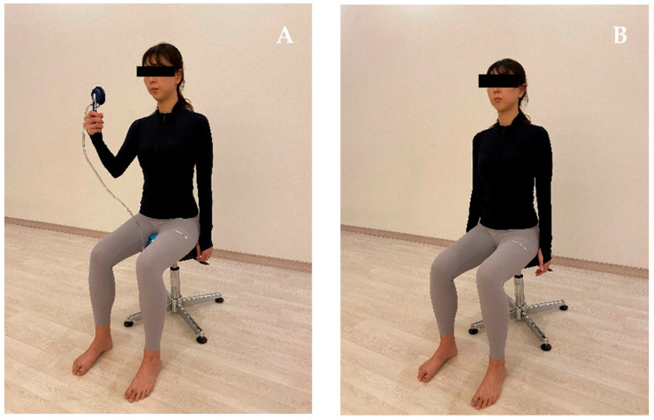

Página 10 · A escada da incontinência de esforço
Tratar a incontinência de esforço: a escada (o clínico primeiro)
Ela perde na força — e a primeira conduta NÃO é operar. Por quê?
A quebra de paradigma: o tratamento inicial é clínico (perder peso)
O tratamento inicial da incontinência de esforço é clínico — e isso é uma quebra de paradigma: antigamente era cirúrgico, hoje não é mais. Não se opera todo mundo. O primeiro degrau começa por algo que parece banal e não é: perder peso. A obesidade é fator de risco independente para qualquer tipo de incontinência — por esforço ou por bexiga hiperativa. Reduzir peso reduz a pressão sobre o assoalho e melhora as duas síndromes. É conduta, não conselho genérico.
Kegel: o exercício perineal que fortalece o assoalho
O exercício perineal — o exercício de Kegel — é o pilar da reabilitação. A paciente contrai a musculatura como se estivesse tentando fechar o esfíncter anal, repetindo o movimento várias vezes ao dia para fortalecer o assoalho. É simples de ensinar e treina-se com ela na consulta, conferindo se está contraindo a musculatura certa. Fortalecer o assoalho é fortalecer justamente o suporte que, na incontinência de esforço, cedeu.
Fisioterapia: melhor efeito, baixíssimo risco — o trabalho pesado
A fisioterapia — com biofeedback e eletroestimulação — tem efeito melhor e baixíssimo risco comparada a operar todo mundo. Na uroginecologia, é a fisioterapia que faz o trabalho pesado: boa parte das pacientes fica bem só com isso e perde a indicação de cirurgia. É o degrau que resolve a maioria, e por isso vem antes de qualquer bisturi.
Duloxetina: papel secundário (não é a grande medicação)
No campo do medicamento, a duloxetina tem papel secundário — não é a grande medicação da incontinência de esforço. Ela aparece em prova, e o contexto típico é a paciente que já tem quadro depressivo e usa antidepressivo: pode-se conversar com a psiquiatria sobre trocar o antidepressivo por duloxetina, que ajuda um pouco na incontinência de brinde. Um princípio profissional embutido: não se retira sozinho a medicação que outro colega passou — conversa-se com quem prescreveu. É questão de educação profissional, não de prova, mas vale a postura. Se o tratamento clínico falhar (ou o caso for mais grave), aí sim se discute a abordagem cirúrgica — o próximo degrau.
Degrau 3 · Cirurgia
Sling (padrão atual) — só quando o clínico falha ou o caso é mais grave.
Degrau 2 · Duloxetina
Papel secundário — nicho da paciente já em antidepressivo (troca com a psiquiatria).
Degrau 1 · Clínico
Perda de peso + Kegel + fisioterapia (biofeedback / eletroestimulação). Resolve a maioria.
Sobe o degrau só quando o de baixo falha.
O Kegel fortalece os músculos do assoalho do Mapa — reforçando a mesma tipoia que, cedendo, deixa escapar a urina.

A fisioterapia — com biofeedback e eletroestimulação — fortalece o assoalho e faz o trabalho pesado da uroginecologia; boa parte das pacientes fica bem só com isso.
Ko MJ et al. Figure 1, Healthcare 2022;10(3):570. Sob CC BY 4.0.
técnica em voluntária saudável — não é caso de incontinênciaQuiz — fixação
Mulher de 52 anos com incontinência de esforço leve, IMC 33, sem resposta ainda a nenhuma medida. A conduta inicial mais adequada é:
- B — a virada. O tratamento inicial da IUE é clínico: peso, Kegel e fisioterapia resolvem a maioria e poupam a cirurgia.
- A. Operar de largada contraria “não se opera todo mundo”; o sling é degrau 3, após falha do clínico.
- C. A duloxetina é de papel secundário, não primeira linha — cai quem a promove a protagonista.
- D. A urodinâmica não é obrigatória aqui; indica-se em situações específicas, não antes do tratamento conservador.
Sobre a duloxetina no tratamento da incontinência de esforço, é correto afirmar:
- B — a virada. A duloxetina é coadjuvante — brilha no nicho da paciente que já usa antidepressivo e pode trocá-lo por ela.
- A. Superestima o fármaco; não é primeira linha nem a “grande medicação”.
- C. A fisioterapia faz o trabalho pesado com baixíssimo risco — a duloxetina não a substitui.
- D. É o oposto do contexto real: é justamente na paciente com depressão que ela ganha lugar (trocando o antidepressivo).
Quando o clínico não basta, entra o bisturi — e a prova cobra o que separa uma faixa da outra.